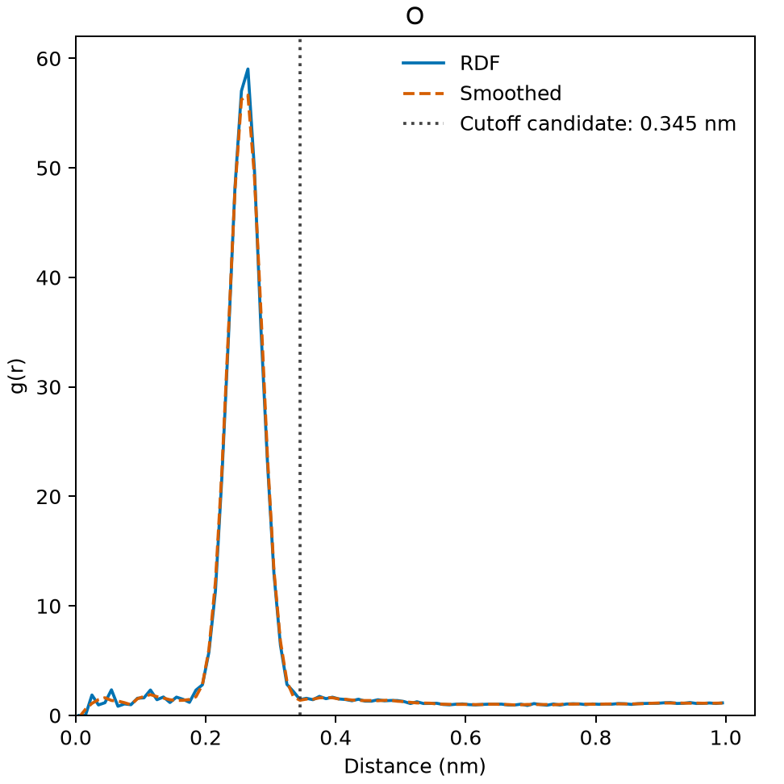
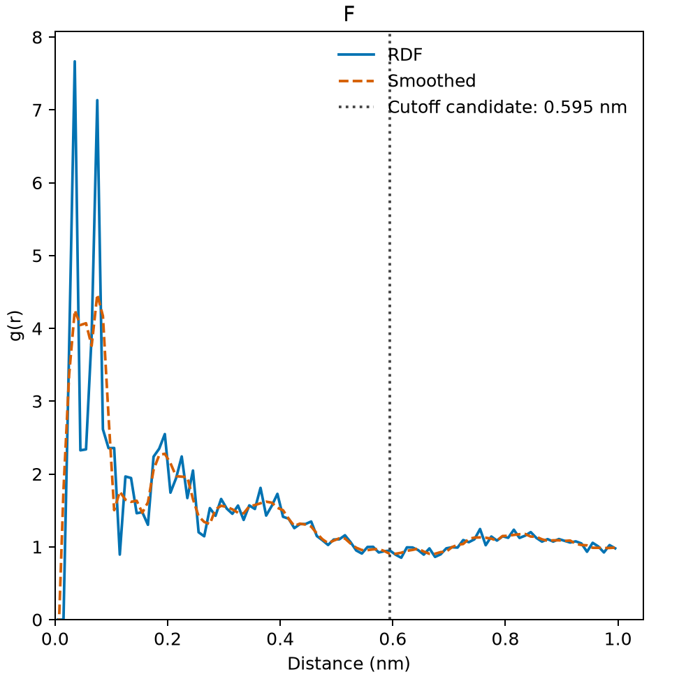
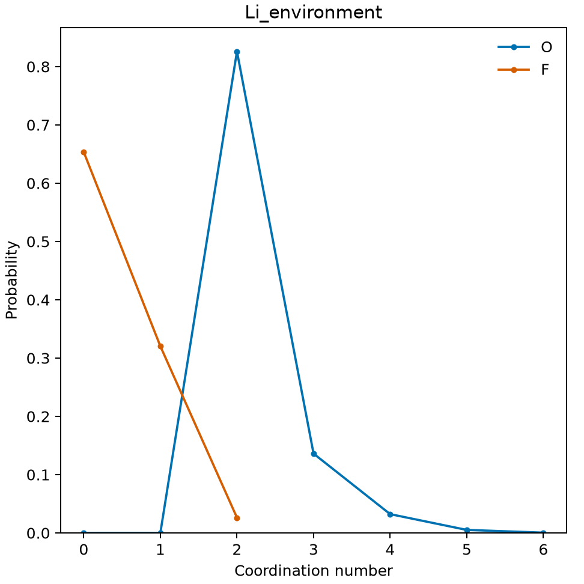
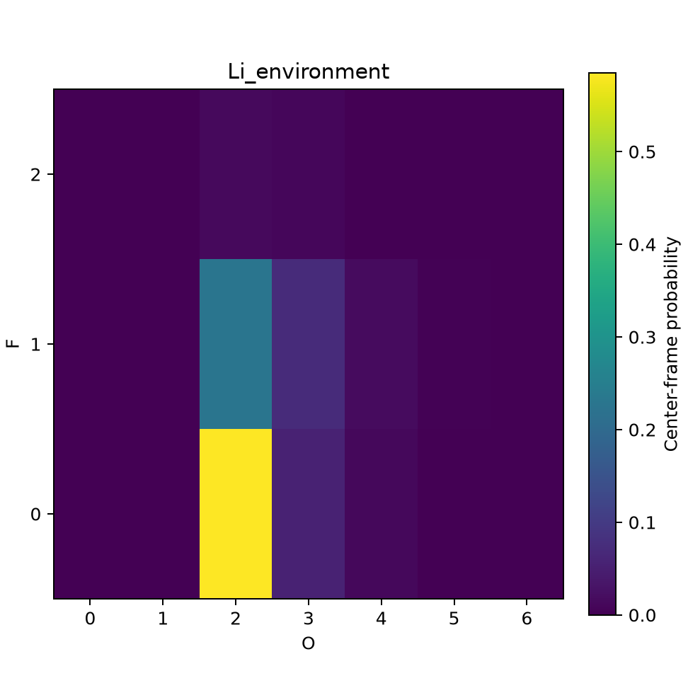
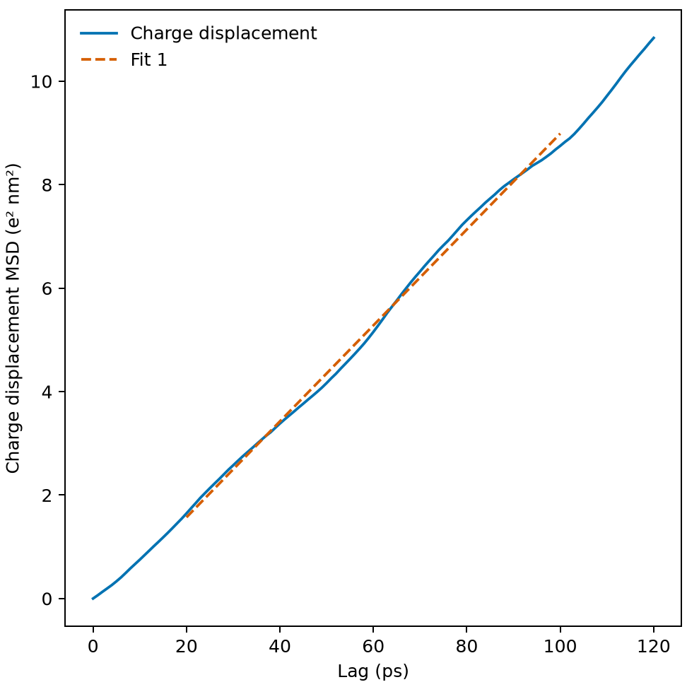

如何使用 AtomLoom
-
1. 设计配方并生成结构
在电解质设计器选择组分，设置比例、浓度或粒子数。完成装盒后，在三维预览中检查结构并导出文件。
打开电解质设计器 ↗ -
2. 准备分子动力学模拟
进入 GROMACS 模拟，准备匹配的结构与力场拓扑，设置最小化和平衡条件，然后导出运行包。
打开 GROMACS 模拟 ↗ -
3. 分析轨迹并下载结果
在后处理分析中载入拓扑和轨迹，选定原子组、截断半径与拟合区间，查看并导出分析结果。
浏览本页算例 ↓
体验一次轨迹后处理
离线演示使用预先完成的合成轨迹算例。展开输入设置，再切换图表查看对应输出。
输入与设置
拓扑与轨迹
- 拓扑
topology.gro- 轨迹
trajectory.xtc- 样本
- 320 帧，间隔 1 ps
- 测试粒子
- 32 Li、32 F、64 O
RDF 与配位
- 中心
name LI- 第一组目标
name O- 第二组目标
name F- O 配位半径
- 0.38 nm
- F 配位半径
- 0.60 nm
电导率与迁移数
- 温度输入
- 300 K
- 载流粒子
- Li (+1 e)、F (−1 e)
- 参考系
- 实验室参考系
- 拟合窗口
- 20–100 ps
分析结果

- 首峰位置
- 0.265 nm
- 首峰峰高
- 56.64
- 半高宽
- 0.06181 nm
- 候选截断半径
- 0.345 nm

- 候选首峰位置
- 0.375 nm
- 候选首峰峰高
- 1.620
- 候选截断半径
- 0.595 nm

- 平均 Li–O 配位数
- 2.218
- 平均 Li–F 配位数
- 0.373

下载联合配位 CSV

- 集体电导率
- 9.838 mS/cm
- NE 估算电导率
- 6.747 mS/cm
- 阳离子迁移数
- 0.549
- 阴离子迁移数
- 0.451
- 拟合 R²
- 0.9967
样例数值仅用于检验分析流程。真实材料分析需要匹配的拓扑与轨迹，以及合适的选择、截断半径和扩散拟合窗口。
下载并复查结果
自变量表记录组分、拓扑描述和局部结构特征。因变量表记录输运指标与拟合诊断。完整结果包含图、曲线数据及计算设置。
正式页面提交新的 HPC2 任务需要网站授权。打开本演示和下载样例无需账号。